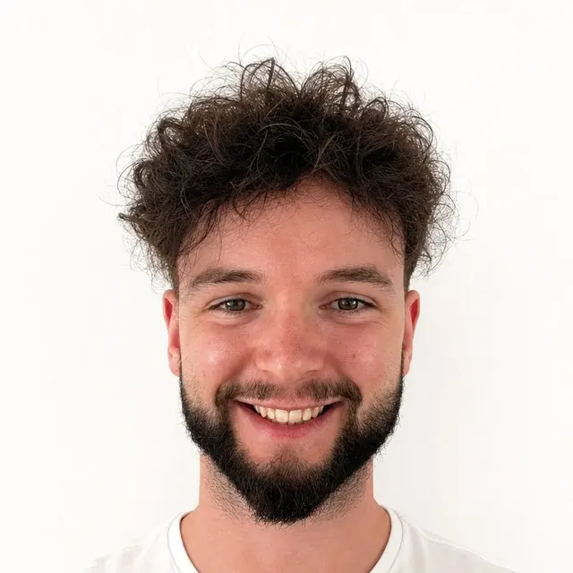
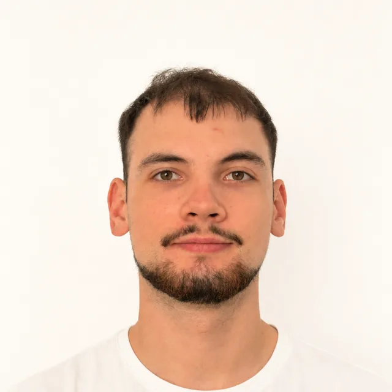

The two people who do the work.
Top of Mind is run by its two founders in Cluj-Napoca, Romania, and every account gets the same two people, start to finish. Whoever you speak to on the call is whoever does the work.
Who does what
One of us handles strategy and media, the other the site and the measurement.

Iulian Huian
Co-founder & CEO. Strategy & paid media.
Runs every account's Meta and Google Ads and sets the research process behind each campaign. If you book the call, you'll most likely talk to him first. He is studying marketing at Babeș-Bolyai University.

Sebastian Răzeșu
Co-founder & CTO. Websites & web analytics.
Builds and maintains every client website and owns the tracking behind it: if a campaign's numbers are right, it's because the analytics were set up to measure them properly in the first place. He also keeps this site running.
How that works for you
- The person on the call does the work. No hand-off to a team you've never met after the contract is signed.
- Decisions without an approval chain. If something needs to change, the people who can change it are already on the thread.
- Nobody learns your business twice. The research from week one stays with the two people running your account.
Talk to us directly.
You get thirty minutes with the two people who would do the work, and an honest answer on fit.